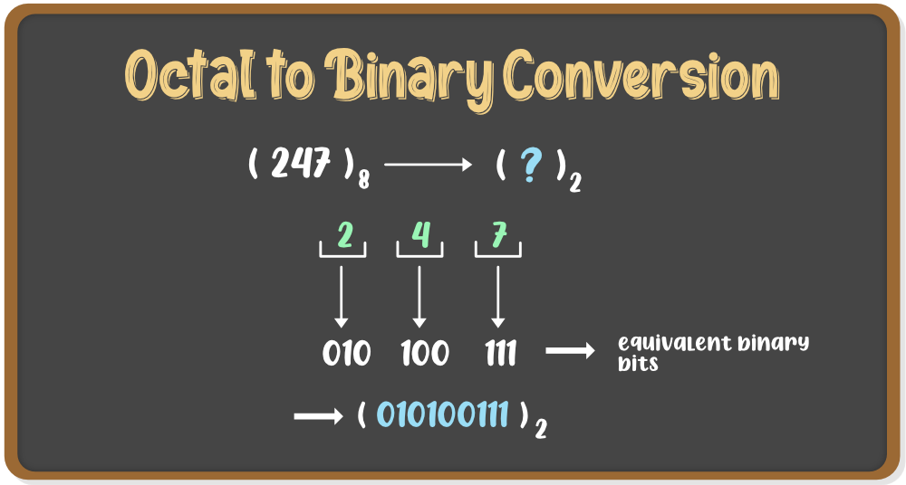
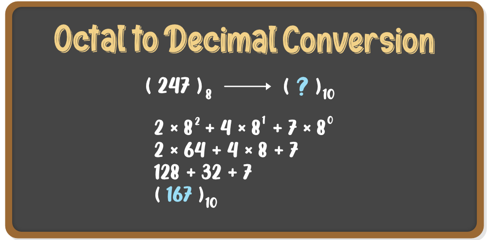
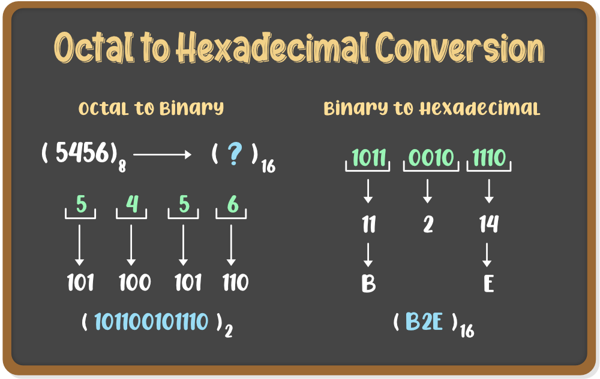

INTRODUCTION OF OCTAL NUMBER SYSTEM
"This is a system that has a base of eight and uses the number from 0 to 7." It is one of the classifications of number systems apart from Binary Numbers, Decimal Numbers, and Hexadecimal Numbers. The symbol of the octal is used to represent the numbers that have a base of 8 and uses numbers from 0 to 7 i.e., 0, 1, 2, 3, 4, 5, 6, and 7.
OCTAL TO OTHER CONVERSIONS
Octal to Binary
To convert a number from octal to binary, the conversion has to be done by converting each number
from the octal digit to the binary digit. Every digit has to be converted to a 3-bit binary number
and the resultant will be the binary equivalent of an octal number.
Only 3 bits are used to represent Octal Numbers. Each group will have a different value between 000
and 111.Below table represents the octal values and equivalent binary values.

Octal to Decimal
The method that we use to convert an octal number into its decimal equivalent is extremely simple. We just need to expand the number in the base of eight with its positional weight and done! The resultant value will be a decimal number.

Octal to Hexadecimal
Hexadecimal numbers are made up of numbers and alphabets. These numbers are represented with the
number 16 in their base. The numbers from 0-9 are represented in the usual form, but numbers from 10
to 15, are denoted as A, B, C, D, E, F. Conversion of the octal number to hexadecimal consists of
two steps.
- In the first step, we need to convert octal numbers to decimal numbers.
- In the second step, convert decimal numbers to hexadecimal numbers.
